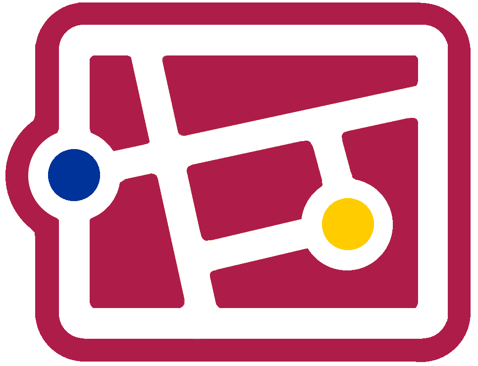
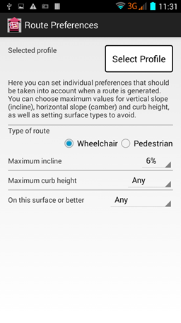
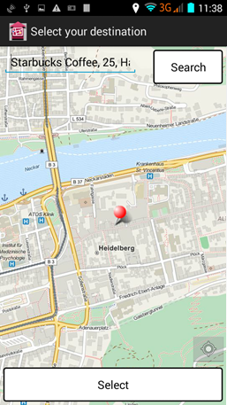
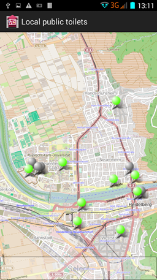
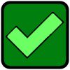
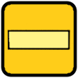
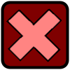

MyAccessible.EU
MyAccessible.EU is part of the European Commission funded CAP4Access project. The project aims at addressing accessibility issues for people with restricted mobility through the use of awareness raising and the development of several tools and methodologies. The Navigation App is one of these tools developed and aims at providing navigation instructions that are useful for pedestrians, whilst also allowing the determination of routes that take into account restrictions that are important for people with reduced mobility.
The Navigation App
The Navigation App (downloadable for Android here) has been developed at the GIScience Research Group in Universität Heidelberg as part of the CAP4Access project. The advantages that it has over more mainstream navigation apps is that it is linked with the Wheelchair Routing system of the Open Route Service (http://www.openrouteservice.org) and so the routes used are tailored to people with reduced mobility, as well as providing instructions in a format that is seen as more suitable for pedestrians.
Navigation Instructions
Unlike car based navigation systems that provide instructions in the format In 100m, turn right
the Navigation App tries to
use landmark based instructions such as After the Covent Garden tube station, turn right
. Not only are these instructions more
similar to instructions that you would receive from people, they also reduce the need for a judging of distance, which people are
often not particularly good at!
The features selected for use as landmarks are obtained from the OpenStreetMap dataset. The most suitable instruction is generated using a complex algorithm that takes into account a number of characteristics about the turning point.
User Preferences
To ensure that the route used is suitable for people with reduced mobility, the routes are obtained from the Open Route Service at the Universität Heidelberg. Using the wheelchair routing option, steps in the environment are automatically avoided and the user has the ability to set restrictions on incline, kerb height and surface materials. All this information can be entered within the Navigation App.
One of the key features of the app with regards to assisting people with reduced mobility is the generation of routes based on
preferences specified by the user. These can be set in the Preferences
section of the app. The preferences can also be
modified based on a Profile
that is selected. The app has a number of pre-defined profiles which represent fictitious people
and their routing restrictions. As a user, you can (but do not have to) select the profile that most closely matches your own personal
situation, and then tweak the settings to make it fully personalised.
Selecting a Destination
There are a number of methods for selecting the end point or your route. You can either search for a place, drop a pin on a map, select a nearby public toilet, or choose a place from Wheelmap (http://wheelmap.org).
Searching and Pin Drop
The most classical method of choosing an end point is through searching or dropping a pin on the map. Both of these options are possible
from the main route definition screen. On the map view (after clicking the Select
button in the Destination
area) pressing
and holding the screen will drop a pin at that location. If available, the address will be shown in the search box. Otherwise, you can
type in the name and/or address into the search box, and click Search
to show matches that have been found in the OpenStreetMap
database. Once a pin has been placed through either of these methods, Select
can be clicked and the place will be used as your
destination.
Nearby Toilet
To find a nearby toilet, simply click on the Find nearby public toilets
button from the front screen to show a map of your
surroundings with toilets highlighted. Green markers are toilets that have
been marked as wheelchair accessible, yellow are ones marked as having
limited accessibility (i.e. may have no steps but lack wheelchair specific facilities), red  have been marked as not wheelchair accessible, and grey do not have any
information available regarding accessibility. Once clicked, the
have been marked as not wheelchair accessible, and grey do not have any
information available regarding accessibility. Once clicked, the Select
button can be selected to use the toilet as the target
destination.
Wheelmap Destination
Wheelmap.org is an online map that allows people to find and mark places as being wheelchair accessible or not. The Navigation App makes use of their data to allow you to select a nearby place that matches your accessibility requirements. After selecting a particular category of place (i.e. Food, Accomodation, Health) you are presented with a list of nearby places ordered by how close they are to you. This list can also be further filtered to restrict results, such as showing only Cafes or Bars. On the list, icons are used to signify the accessibility of the place:
 - The place is wheelchair accessible, - The place has limited wheelchair accessibility,
 - The place has no wheelchair accessibility,
- The accessibility of the place is unknown.
After selecting a place from the list, further information is displayed including its address, website address and telephone number.
Clicking the phone number will place a call to them, and clicking the website address will open that site on your devices internet
browser. If you want to go to this place, clicking the Take me there
will use it as the destination for the route.
For the Techies - Navigation API
The navigation instructions used in the app are generated within a web service. This web service is publicly accessible through API
calls. The output of the API is in GeoJSON format, with instructions being supplied in the first case as a structured String array. This
means that the return value is not a full sentence, but a series of string values that represent core components. For example, the text
Turn left after the Covent Garden tube station
would not be first output. Instead, the string |left|Covent Garden|tube station||after|turn
would be sent. This is so that any system can use the information without have to interpret a complex linguistic sentance. For example,
an app focusing on navigation for blind users could make use of the output by directly reading the turn
and left
components
to generate a specific sequence of vibrations.
For more information about the API, please contact Adam Rousell at the GIScience Research Group of Universität Heidelberg.